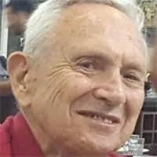

נחל עוז
ליבנה חיים ז"ל
חבר קהילת נחל עוז
סיפור חיים
חיים ליבנה ז״ל נולד בבואנוס איירס, בירת ארגנטינה, בשנת 1936. בילדותו גדל בבית יהודי וציוני, וחי בין שתי תרבויות - התרבות הארגנטינאית והשפה הספרדית, לצד העולם היהודי, העברי והציוני שאליו נמשך ליבו.
מגיל צעיר היה חיים חלק מתנועת הנוער היהודית־ציונית ״למרחב״. במסגרת התנועה למד עברית, השתתף במחנות עבודה ובפעילויות חינוכיות, וספג ערכים של ציונות, יהדות ואהבת ארץ ישראל. התקופה הזו עיצבה את זהותו ואת דרכו, והובילה אותו לבחור בעלייה לישראל ובהגשמה ציונית.
לפני עלייתו עבר חיים הכשרה חקלאית בעיירה מוזסוויל בארגנטינה, באזור שבו התקיימה קהילה יהודית חקלאית גדולה. שם למד דרך עשייה והתנסות: חליבת פרות, גידול ירקות, חריש בעזרת סוסים, טיפול בתוצרת חקלאית ומסחר חקלאי. ההכשרה הזו הפכה עבורו לבית ספר מעשי לחיים, ולבסיס להשתלבותו העתידית בקיבוץ.
בשנת 1956 עלה חיים לישראל והגיע לקיבוץ בחן. אף שלא ידע עברית היטב, הכשרתו החקלאית אפשרה לו להשתלב מיד בענף הירקות של הקיבוץ. במשך עשר שנים התגורר בבחן, ושם הכיר את ישראלה, רעייתו. בבחן גם נולד בנם הראשון.
בשנת 1966 עברה המשפחה לקיבוץ נחל עוז, ושם נולדו לילדיהם אחים נוספים. חיים מצא בנחל עוז בית, קהילה ושדות שבהם יכול היה להביא לידי ביטוי את אהבתו לחקלאות, את חריצותו ואת סקרנותו המקצועית.
בשנת 1971 יצא חיים ללימודי חקלאות בפקולטה ברחובות. לצד הניסיון הרב שכבר צבר כחקלאי וכמגדל ירקות, רכש בלימודיו ידע תיאורטי בתחומים רבים, בהם גיאולוגיה, זואולוגיה, בוטניקה, פיזיקה וכימיה. השילוב בין ניסיון מעשי לידע מדעי אפשר לו לערוך ניסויים, לפתח זנים ושיטות עבודה, ולחדש בענפי גידולי השדה.
אחד התחומים שבהם בלט במיוחד היה פיתוח וגידול אבטיחים ללא גרעינים. חיים אהב לעסוק בדברים יוצאי דופן, ובמשך שנים ערך ניסויים, למד שיטות האבקה, נסע למכון הוולקני בבית דגן והתעמק בדרכים לשיפור הגידול והיבול. עבודתו הובילה להצלחה משמעותית, ובשנת 1980 נשלחה לשיווק בתל אביב המשאית הראשונה של אבטיחים ללא גרעינים משדות נחל עוז.
על תרומתו לחקלאות, ועל פיתוח ושכלול שיטות גידול והאבקה, זכה חיים בפרס קפלן היוקרתי בתחום החקלאות. הישגיו הסבו לו גאווה רבה, והיו מקור גאווה גם לקיבוץ ולקהילה החקלאית שסביבו.
עם יציאתו לגמלאות פנה חיים לעשייה קהילתית ותרבותית. הוא היה פעיל בטלוויזיה הקהילתית של המועצה האזורית שער הנגב, וריכז חוג ברידג׳ במועדון ״יחדיו״. גם בשנים אלה המשיך להיות אדם פעיל, סקרן, יצירתי ומחובר לאנשים.
חיים נזכר כאיש ערכי, חרוץ ויצירתי, אדם שנהנה ממשפחתיות, אהב לצחוק ולהצחיק, וידע להביא לכל מקום שילוב של חוכמה, ניסיון חיים, הומור ואהבת אדם.
שבעה באוקטובר והימים שאחריו בבוקר שבת, שמחת תורה תשפ״ד, 7 באוקטובר 2023, חדרו מחבלים לקיבוץ נחל עוז במסגרת מתקפת הטרור הרצחנית על יישובי עוטף עזה.
חיים נרצח בביתו בנחל עוז בכ״ב בתשרי תשפ״ד, 7 באוקטובר 2023. בן 87 היה במותו. הוא הובא למנוחות בבית העלמין המקומי בנחל עוז.
זיכרון ומילים מהלב חיים הותיר אחריו משפחה אוהבת - בת ושני בנים, נכדים ואחים - ואת זכרו כאדם של עבודה, יצירה, חקלאות, משפחה וקהילה.
סיפור חייו של חיים הוא סיפור של עלייה, הגשמה, חיבור לאדמה ותרומה מתמשכת לקיבוץ ולחקלאות הישראלית. מילדותו בבואנוס איירס, דרך ההכשרה החקלאית בארגנטינה, העלייה לישראל והחיים בקיבוצים בחן ונחל עוז - חייו היו מלאים עשייה, אמונה, חריצות ואהבת הארץ.
חיים נזכר כאדם חכם, מצחיק, משפחתי ויצירתי; חקלאי בנשמתו, איש קהילה ואדם שהשאיר אחריו שדות של זיכרון, אהבה ותרומה.